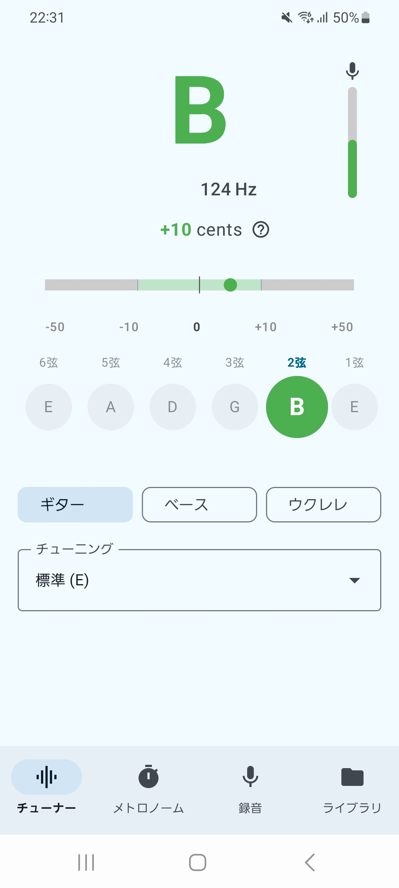
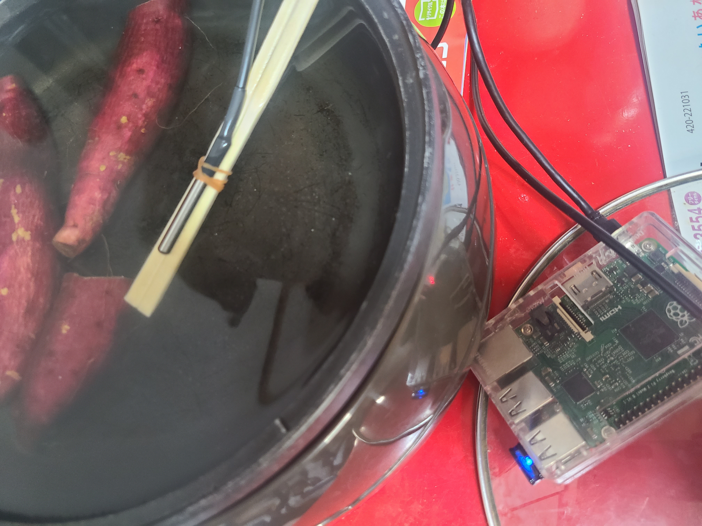
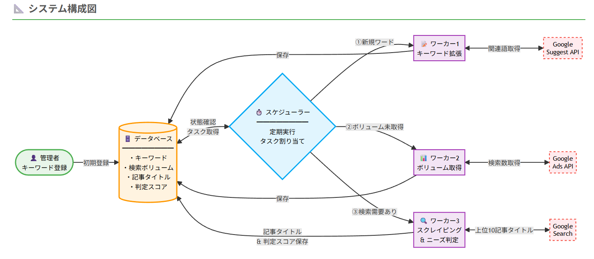

作ることで学び、学ぶことで作る
Raspberry Pi上でESC/POSコマンドによりサーマルプリンターを制御するAPIを開発。音声認識で入力したテキストを即座にレシート用紙に印刷し、物理的なメモとして残せます。python-escposライブラリを活用した印刷制御システム。
指パッチン音を高精度で検知して照明を操作するIoTデバイス。マイクで常時音量を監視し、閾値を超えた音をFFT（高速フーリエ変換）で周波数解析、SVM（サポートベクターマシン）で特定の音のみを判別。誤検知を防ぐ機械学習による音響認識システム。
スマートフォン向け音楽ゲームを自動演奏する装置。OpenCVで画面のノーツを認識し、Arduinoでタイミング制御。3Dプリンタで筐体を作成し、ネオジム磁石を使った自作ソレノイドで物理的にタップ。画像認識と精密な機械制御を組み合わせた高精度自動プレイシステム。
リモートワーク環境の改善を目指して開発した環境監視システム。ESP32で温度・湿度・CO2濃度をリアルタイム測定し、LAN経由で通信。CO2濃度が高まると換気を通知し、湿度に応じて加湿器を自動制御。長時間のデスクワークでも快適な作業環境を維持します。
旅行の記録をルート情報、写真、メモで残せるSNSアプリ。Google Maps APIでリアルタイム位置追跡し、Kalmanフィルタで位置精度を向上。訪れた場所に写真とメモをピン留めし、移動ルートをポリラインで可視化。旅の思い出を地図と共に振り返れます。

YIN法による高精度チューナー、5種類のサウンドパターン対応メトロノーム、録音録画、練習動画再生機能を統合したAndroidアプリ。Jetpack ComposeとMaterial3でモダンなUIを実現し、MVVM + 単一方向データフローによる保守性の高いアーキテクチャを採用。AudioRecordとSoundPoolでリアルタイム音声処理を実装。
完全自律型ロボットによる競技大会で優勝。通信なしで複数ロボットを協調させるユニークな手法と、高精度な3本爪キャッチ機構を実装。RXマイコンをC言語で制御し、センサー情報から自律判断を行います。

美味しい焼き芋を作るための温度自動制御システム。DS18B20温度センサーで水温を監視し、TP-Link Tapoスマートプラグを介してホットプレートをON/OFF制御。85℃で1時間保温という最適な調理温度を自動維持します。Raspberry Piで1時間の調理を完全自動化。

Google Ads APIを活用した24時間稼働のキーワード分析システム。検索ボリュームの大きいキーワードから関連ワードを自動生成し、データベースに蓄積。cronによる定期実行で最新データを取得し続け、検索ニーズの高いキーワードを発見します。